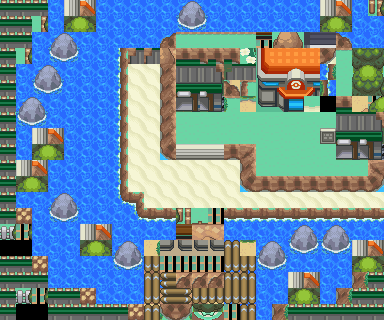

小茜｜满金市
单打 ｜ 队伍 4 只 ｜ 满金市
概况
- 名称：小茜
- 对战形式：单打
- 队伍规模：4 只
- 实际地区／场景：满金市
- 更正依据：用户及本轮对白确认（111=满金市小茜）
- 训练家道具：伤药、厉害伤药、好伤药
- 同名记录（不合并）：0392 小茜
队伍
等级为该记录内的基础队伍等级。
| # | 宝可梦 | 等级 | 携带 | 招式 |
|---|---|---|---|---|
| 1 | 皮皮 | 17 | 进化奇石 | 天使之吻（妖精） ／ 暗影球（幽灵） ／ 挥指（一般） ／ 月光（妖精） |
| 2 | 长耳兔 | 19 | 无 | 火焰拳（火） ／ 雷电拳（电） ／ 冰冻拳（冰） ／ 二连踢（格斗） |
| 3 | 姆克鸟 | 21 | 无 | 翅膀攻击（飞行） ／ 搏命（格斗） ／ 燕返（飞行） ／ 吹飞（一般） |
| 4 | 大奶罐 | 23 | 吃剩的东西 | 嬉闹（妖精） ／ 铁头（钢） ／ 喝牛奶（一般） ／ 重踏（地面） |
性格 · 努力值 · 个体值
- 皮皮：性格 内敛（Modest）；个体值 31；努力值 HP6 / 防御252 / 特攻252；特性：随机第1/第2特性（Random 1&2）。
- 长耳兔：性格 急躁（Hasty）；个体值 31；努力值 攻击128 / 速度252 / 特攻128；特性：随机第1/第2特性（Random 1&2）。
- 姆克鸟：性格 急躁（Hasty）；个体值 31；努力值 攻击128 / 速度252 / 特攻128；特性：随机第1/第2特性（Random 1&2）。
- 大奶罐：性格 内敛（Modest）；个体值 31；努力值 HP6 / 防御252 / 特攻252；特性：随机第1/第2特性（Random 1&2）。
已知特殊规则
- 满金道馆拟态规则（CAMOMONS）：战斗内所有宝可梦的属性改为前两个招式的属性（双方适用）。
- 皮皮：天使之吻 + 暗影球 → 实战属性 妖精 / 幽灵
- 长耳兔：火焰拳 + 雷电拳 → 实战属性 火 / 电
- 姆克鸟：翅膀攻击 + 搏命 → 实战属性 飞行 / 格斗
- 大奶罐：嬉闹 + 铁头 → 实战属性 妖精 / 钢
同名提示：本页规则只属于编号 111，不套用到其它同名记录。
溯源：wiki_export/world/data/trainers.json 指针 /trainers/111；地区名来自 wiki_export/world/data/maps.json；道具名来自 wiki_export/core/data/items.json；特殊规则文字依据 trainers_research/README.md。稳定编号 0111。
资料原关联场景（未更正的原值）：6号公路；满金市。
正文不展示 ROM 地址与原始字节。
地点地图
共享RGB底图；点击可缩放定位。数字对应本页相关地点，不代表地图上全部事件。
满金市 · 五之岛旧布局

地图范围记录：当前资料没有精确人物／遭遇坐标。
本图对应原FiveIsland布局，与截图中的五之岛道路相连；地区段显示名与当前满金市城区相同，不是同一张地图。
满金市·住宅区


地图范围记录：当前资料没有精确人物／遭遇坐标。
满金市·商业区


地图范围记录：当前资料没有精确人物／遭遇坐标。 底图有1个图块缺少原始数据。
满金市·酒吧所在城区


地图范围记录：当前资料没有精确人物／遭遇坐标。
满金市·港湾区

地图范围记录：当前资料没有精确人物／遭遇坐标。
满金市

地图范围记录：当前资料没有精确人物／遭遇坐标。